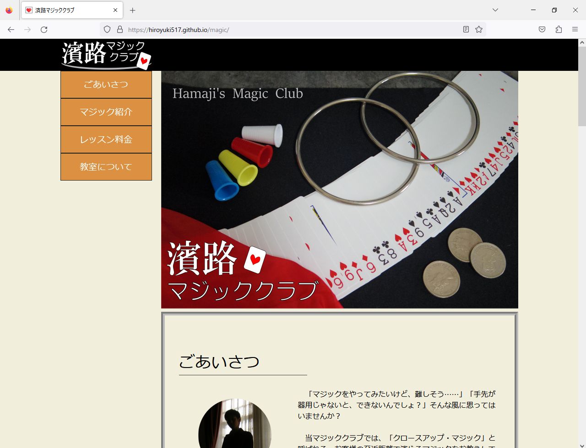

設定要件
「個人でマジック教室を営んでいる方から、
その教室のWebサイトの制作を依頼されました。」
- Webサイトの目的：
マジック教室のPRのため、および会員数の増加を促すため。 - ターゲットとする客層：
40代～50代の中高年、および60代以上の年配の方。
マジックの経験が無い人にもぜひ来て欲しい。 - Webサイト全体の要望：
マジックに触れたことのない人でも、親しみを持ってもらいたい。
一方で、マジックの華やかさも演出して欲しい。
工夫した点
- スクロールするだけで全ての情報が見えるように、ページは分割せず、一つのページ内で収まるようにした。
- 教室のロゴとメニューは、パソコン版とスマートフォン版とで表示を切り替える（後述）。JavaScriptでの扱いを容易にするため、レイアウトの段階から要素の配置を工夫した。
- パソコン版：
ロゴとメニューは、スクロールをしてもブラウザの画面に固定される。
（最上部までスクロールした場合にのみ、ロゴがヘッダーと重なる） - スマートフォン版：
ロゴだけがヘッダーと重なり、メニューは画面右上の三角形アイコンをタップすると表示される。
（三角形アイコンか、メニューの外をもう一度タップすると消える）
制作過程
- 9月5日（1日目）
- レイアウト制作
- 9月6日（2日目）
- HTML/CSSコーディング開始
- 9月7日（3日目）
- JavaScriptプログラミング開始
- 9月9日（5日目）
- 画像素材の撮影と編集、ロゴ画像制作
- 9月11日（7日目）
- JavaScript追加
- 9月12日（8日目）
- レスポンシブ対応開始
- 9月15日（11日目）
- レイアウト修正、プログラム一部修正
- 9月18日（14日目）
- フォント修正
- 9月19日（15日目）
- GitHub Pagesにアップロード
使用言語
- HTML
- CSS
- JavaScript（jQuery）
使用ソフトウェア
- Visual Studio Code（テキストエディタ）
- GIMP（ビットマップ画像編集ソフト）
- Inkscape（ベクター画像描画ソフト）